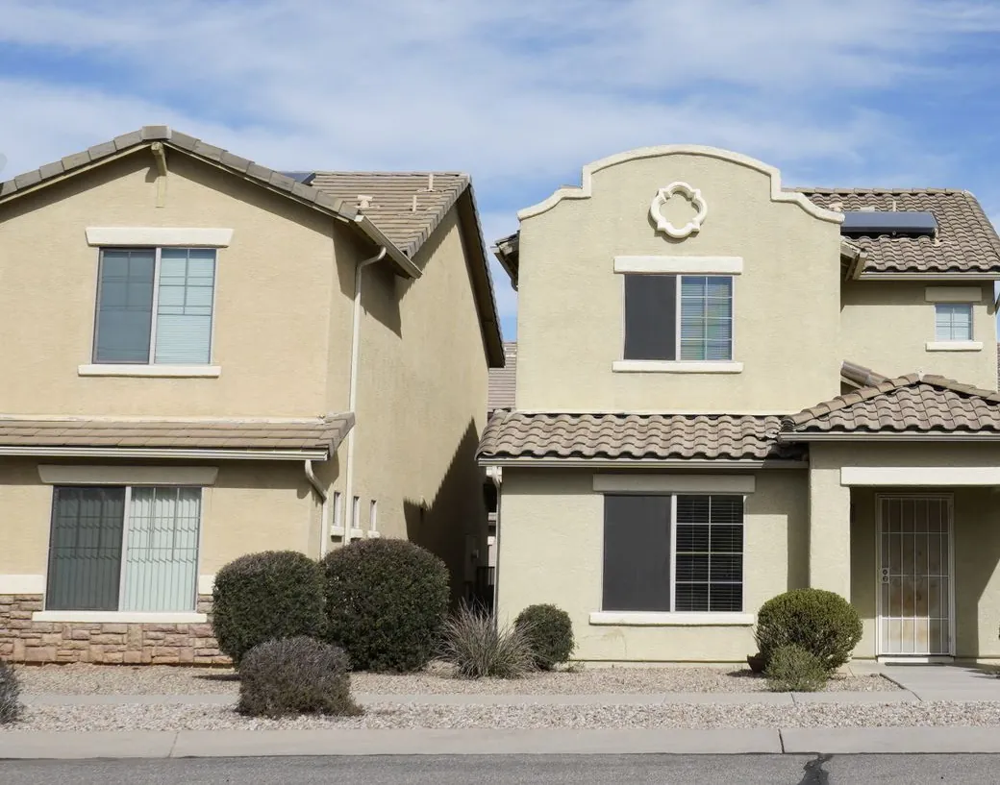

Stucco
New stucco on houses, garages, additions and yard walls, built up coat by coat from the lath to the finish. Older walls get repairs, a new finish or a fresh coat of paint.
- Houses, garages and additions
- Yard walls and outdoor bars
- Repairs and paint on older stucco